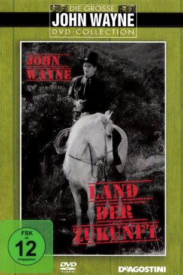
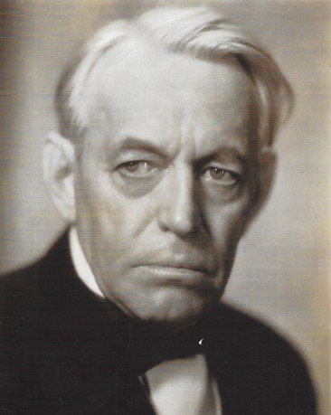

#9142 Land der Zukunft
Alternativ: The Lawless Nineties
 
 IMDB-Wertung: 5.5 / 10
IMDB-Wertung: 5.5 / 10  Metascore: 0
Metascore: 0 
Die Bevölkerung von Wyoming soll darüber abstimmen, ob die Region der Union beitritt und damit ein Bundesstaat der Vereinigten Staaten wird. Einige Schurken wollen den Anschluss mit allen Mitteln verhindern. Die beiden Geheimagenten Tipton und Bridger müssen dafür sorgen, dass die Abstimmung korrekt verläuft und bekommen es mit einem mächtigen Gegner zu tun.
Jahr: 1936
Dauer: 55 Minuten
FSK: 12
Land: USA Studio: ITonspuren:
Untertitel:
Auflösung: 1080p (1920x1080) Größe: 11776 MB
Genre: Western
Regisseur: Joseph Kane
Drehbuch: Bryan Q. Miller
Soundtrack:
Darsteller:
 John Wayne als John Tipton
John Wayne als John Tipton- Ann Rutherford als Janet Carter
- Harry Woods als Charles K. Plummer
- George 'Gabby' Hayes als Maj. Carter
 Al Bridge als Steele
Al Bridge als Steele- Fred 'Snowflake' Toones als Moses
- Etta McDaniel als Mandy Lou Schaefer
- Tom Brower als Marshal Bowen
 Lane Chandler als Bridger
Lane Chandler als Bridger Cliff Lyons als Davis - Henchman
Cliff Lyons als Davis - Henchman- Jack Rockwell als Smith
- Al Taylor als Red - Henchman
- Charles King als Hartley - Henchman
- George Chesebro als Green - Henchman
 Sam Flint als Justice Department Official
Sam Flint als Justice Department Official Tom London als Ward - Henchman
Tom London als Ward - Henchman Bob Burns als Settler (uncredited)
Bob Burns als Settler (uncredited)- Horace B. Carpenter als Dynamite Thrower (uncredited)
- Steve Clark als Henchman (uncredited)
- Jim Corey als Henchman (uncredited)
 Helen Gibson als Townswoman (uncredited)
Helen Gibson als Townswoman (uncredited)- Henry Hall als Mayor (uncredited)
 Edward Hearn als Townsman (uncredited)
Edward Hearn als Townsman (uncredited)-  Lloyd Ingraham als Tom - Telegraph Interceptor (uncredited)
- Jack Kirk als Henchman (uncredited)
- Bert Lindley als Evicted Homesteader (uncredited)
- William McCall als Rejected Voter (uncredited)
 Philo McCullough als Outlaw Leader (uncredited)
Philo McCullough als Outlaw Leader (uncredited)- Lew Meehan als Henchman (uncredited)
- Jack Montgomery als Henchman (uncredited)
- George Morrell als Townsman (uncredited)
- Bud Osborne als Henchman (uncredited)
- Tex Palmer als Henchman (uncredited)
- Blackjack Ward als Man Who Reports Government Men Coming (uncredited)
- Tracy Layne als Belden
- Chuck Baldra als Tex
- Chris Allen als Townsman (uncredited)
- Art Dillard als Henchman (uncredited)
- Curley Dresden als Townsman (uncredited)
- James Harrison als Telegraph Operator (uncredited)
- Wally Howe als Townsman (uncredited)
- Pascale Perry als Man Who Reports Posse Coming (uncredited)
- Rose Plumer als Homesteader's Wife (uncredited)
- Bud Pope als Henchman (uncredited)
- James Sheridan als Deputy (uncredited)
- Emma Tansey als Homesteader's Wife (uncredited)
Datei: X:\HD-Western-Collections\John Wayne\Land der Zukunft (1936, FSK12, 1920x1080).mkv seit 19.07.2018
Festplatte: HD Eastern+Western
 Es gibt insgesamt 34 Filme in der Gruppe 'HD-Western-Collections\John Wayne'
Es gibt insgesamt 34 Filme in der Gruppe 'HD-Western-Collections\John Wayne'